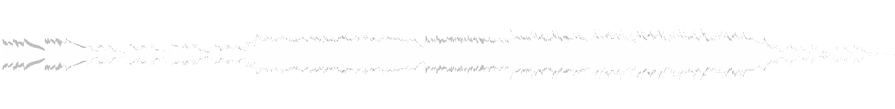

现场音控 · 录音 · 混音
两首自己的活儿。第二首能直接切着听处理前后，差在哪，你自己判断。
翻唱 · 录音 / 剪辑 / 混音 · 4:19
分轨混音 · 4:02

同一段分轨：没做声像摆位和频段规避，直接混 → 处理完的成品。切版本时进度会保留。
初中站在台上唱歌，想知道播放器里的歌为什么那么好听，一路摸到了混音。
后来在广播台摸调音台，在合唱队学声音怎么摆。没规划过，都是被好奇心领过去的。